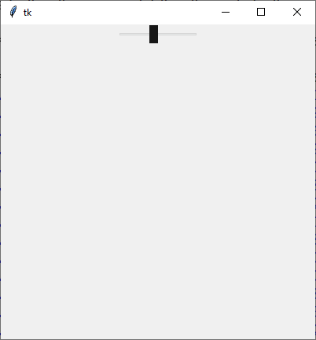

ttk.Scale
Ein Schieberegler
ttk.Scale erzeugen
s = ttk.Scale(parent, Optionen)
Scale kennt die Optionen:
| Optionsname | Beschreibung |
|---|---|
| command | Callback, die bei Änderung des Scale-Wertes ausgeführt wird. Die Callback übergibt den aktuellen Wert des Schiebereglers |
| from_ | linkes oder oberes Ende des Scale-Wertes, Fließkommazahl, Minimum |
| length | Länge der Scale in Pixeln oder einer anderen Einheit |
| orient | Lage des Widgets: tk.HORIZONTAL oder
tk.VERTICAL |
| to | Wie from, das rechte oder untere Skalenende |
| value | Aktueller Wert als Fließkommazahl |
| variable | Variable, die dem Wert folgt. |
ttk.Scale kennt die Standardoptionen: class_, cursor, style, takefocus
Das folgende Programm stellt einen Schieberegler vor, der Werte im Intervall von 0.0 bis 10.0 annehmen kann. Der Wert des Schiebereglers wird mit drei Methoden ausgelesen:
import tkinter as tk
from tkinter import ttk
from tkinter import font
class A(tk.Tk):
def __init__(self):
super().__init__()
self.geometry('400x400')
self._createWidgets()
def _createWidgets(self):
self.iVar = tk.IntVar(value='1')
self.s = ttk.Scale(self, from_=0.0, to = 10.0, variable=self.iVar, command=self._onChange)
self.s.pack()
def _onChange(self, value):
print('Wert:', value, self.s.get(), self.iVar.get())
if __name__ == '__main__':
window = A()
window.mainloop()Scale-Methoden
| Methode | Parameter | Rückgabewert | Beschreibung |
|---|---|---|---|
| sc.get() | - | Fließkommazahl | Aktueller Schieberegler-Wert |
| sc.set(value) | value: Fließkommazahl |
- | Setzt den Schieberegler-Wert |
Sowie die allgemeinen Widget-Methoden:
- Konfigurationsmethoden:
cget(…)undconfigure(…) - Sonstige Methoden:
identify(…),instate(…)undstate(…)